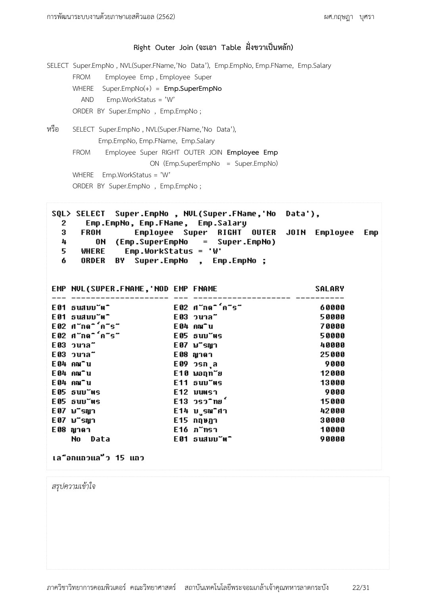
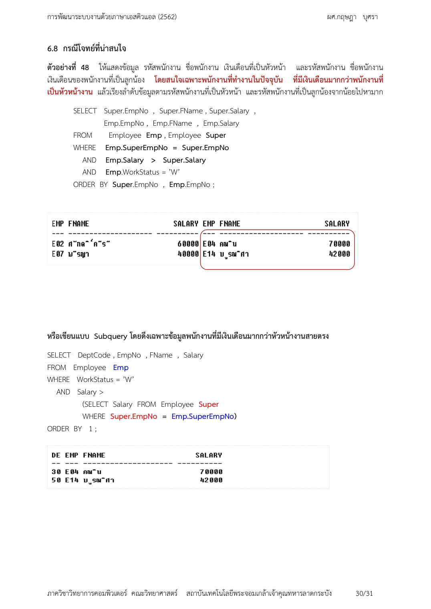

หน้าแรก / SQL
💾 SQL — Outer JOIN, Subquery & Correlated Subquery
📝 รูปแบบข้อสอบ SQL (จากรุ่นพี่)
SQL 1 ข้อใหญ่ มี 8 ข้อย่อย (คล้าย Midterm) — เน้น JOIN เยอะ + Subquery ปีนี้ประกาศเพิ่มเรื่อง Outer JOIN, Subquery, Correlated Subquery ใช้เวลาเยอะมาก จึงต้องทำเป็นข้อแรกและซ้อมเขียนมือจนคล่อง
0. ก่อนเขียนทุกครั้ง — เทคนิค 3 คำถามของอาจารย์
❓ ต้องการดูอะไร?
คอลัมน์ที่โจทย์ขอ → ใส่หลัง SELECT
❓ ข้อมูลอยู่ตารางไหน?
ทุกตารางที่เกี่ยว → ใส่หลัง FROM (ถ้าหลายตารางต้อง JOIN)
❓ กรองยังไง?
เงื่อนไขของแถว → ใส่หลัง WHERE
1. INNER JOIN vs OUTER JOIN
1.1 นิยาม
- INNER JOIN — ดึงเฉพาะแถวที่มีคู่ตรงกันทั้งสองฝั่ง (Matched Rows) ใครไม่มีคู่โดนตัดทิ้ง
- OUTER JOIN — ยอมดึงแถวที่ไม่มีคู่มาแสดงด้วย โดยช่องที่ไม่มีข้อมูลเติมด้วย
NULL- LEFT OUTER JOIN — ยึดตารางซ้ายเป็นหลัก แสดงครบทุกแถวฝั่งซ้าย
- RIGHT OUTER JOIN — ยึดตารางขวาเป็นหลัก แสดงครบทุกแถวฝั่งขวา
- FULL OUTER JOIN — แสดงครบทั้งสองฝั่งแม้ไม่มีคู่
🔍 เปรียบเทียบให้เห็นภาพ
INNER JOIN เหมือนลิสต์เฉพาะคนที่ลงทะเบียน "และ" จ่ายเงินแล้ว (ตรงกันทั้งสองระบบ)
LEFT JOIN เหมือนลิสต์จังหวัดทั้ง 76 จังหวัด ว่ามีพนักงานสังกัดกี่คน — จังหวัดไหนไม่มีพนักงานก็ต้องโชว์ชื่อจังหวัดออกมาด้วย (ช่องพนักงานว่าง = NULL)
1.2 ตัวอย่างโจทย์ที่เคยทำในห้อง
โจทย์ข้อ 1 (INNER JOIN): แสดงชื่อพนักงาน เพศ และชื่อแผนกของพนักงานทุกคน
วิเคราะห์: ชื่อ/เพศอยู่ใน Employee, ชื่อแผนกอยู่ใน Department เชื่อมกันด้วย Dept_Code
SELECT Employee.Emp_Name, Employee.Sex, Department.Dept_Name FROM Employee INNER JOIN Department ON Employee.Dept_Code = Department.Dept_Code; -- เขียนสไตล์เก่าบน WHERE ก็ถูกต้องเหมือนกัน SELECT E.Emp_Name, E.Sex, D.Dept_Name FROM Employee E, Department D WHERE E.Dept_Code = D.Dept_Code;
โจทย์ข้อ 2 (LEFT OUTER JOIN): แสดงจังหวัดทั้งหมดพร้อมชื่อพนักงานที่สังกัด — จังหวัดที่ไม่มีพนักงานก็ต้องแสดง
SELECT P.SPV_Name, E.Emp_Name FROM Set_Province P LEFT OUTER JOIN Employee E ON P.SPV_Code = E.SPV_Code;
⚠️ จุดพลาดคลาสสิก
โจทย์พวก "แสดงครบทุกแถวแม้ไม่มีข้อมูลคู่" หรือ "รวมถึงคนที่ยังไม่มี..." = สัญญาณของ OUTER JOIN ถ้าใช้ INNER JOIN แถวไร้คู่จะหายไปเงียบ ๆ (เสียคะแนนโดยไม่รู้ตัว)

1.3 ทดลองรันจริง — ตารางก่อน → คำสั่ง → ผลลัพธ์ (ข้อมูลจิ๋ว)
ทดลองด้วยฐานข้อมูลจิ๋ว 2 ตาราง ที่มี "แถวกับดัก" 3 ตัว ตั้งใจใส่ไว้ให้เห็นความต่างของ JOIN แต่ละแบบชัด ๆ — สังเกตตารางก่อนใช้คำสั่ง แล้วไล่ดูว่าคำสั่งแต่ละแบบ "จัดการ" แถวกับดักอย่างไร
📋 ตารางก่อนใช้คำสั่ง: Employee (5 แถว)
| Emp_ID | Emp_Name | Sex | Dept_Code | Salary |
|---|---|---|---|---|
| E01 | สมชาย | ช. | D01 | 25,000 |
| E02 | สมหญิง | ญ. | D01 | 32,000 |
| E03 | สมศรี | ญ. | D02 | 20,000 |
| E04 | สมศักดิ์ | ช. | D99 ⚠️ ไม่มีจริง | 40,000 |
| E05 | ประเสริฐ | ช. | NULL ⚠️ ยังไม่มีแผนก | 22,000 |
📋 ตารางก่อนใช้คำสั่ง: Department (3 แถว)
| Dept_Code | Dept_Name |
|---|---|
| D01 | ขาย |
| D02 | บัญชี |
| D03 | การตลาด ⚠️ ไม่มีใครสังกัด |
สองตารางเชื่อมกันด้วยคอลัมน์ Dept_Code — แถวกับดักคือ สมศักดิ์ (D99 ไม่มีคู่), ประเสริฐ (ไม่มีค่าคู่เลย) และ แผนกการตลาด (ไม่มีคู่)
ขั้นที่ 1 — INNER JOIN: จับคู่เฉพาะแถวที่ Dept_Code ตรงกัน "ทั้งสองฝั่ง"
SELECT E.Emp_Name, E.Sex, D.Dept_Name FROM Employee E INNER JOIN Department D ON E.Dept_Code = D.Dept_Code;
| Emp_Name | Sex | Dept_Name | จับคู่ด้วย |
|---|---|---|---|
| สมชาย | ช. | ขาย | D01 = D01 |
| สมหญิง | ญ. | ขาย | D01 = D01 |
| สมศรี | ญ. | บัญชี | D02 = D02 |
🚨 ผลของ INNER JOIN กับแถวกับดัก
สมศักดิ์, ประเสริฐ และแผนก "การตลาด" หายไปเงียบ ๆ ทั้ง 3 แถว (เหลือแค่ 3 แถวจาก 5+3) — ไม่มี error ไม่มีเตือน ข้อสอบที่ใช้ INNER JOIN แล้วโจทย์ต้องการ "ครบทุกแถว" จึงเสียคะแนนโดยไม่รู้ตัว
📖 ศัพท์: NULL — อ่านว่า "นัลล์"
ความหมาย: ช่องที่ ไม่มีค่าอยู่เลย (Unknown/Missing) — ต่างจาก 0 และต่างจากช่องเว้นว่าง
ในการ JOIN: แถวที่ไม่มีคู่จะถูก "เติม" ทุกช่องของฝั่งตรงข้ามด้วย NULL เวลาใช้ OUTER JOIN — อย่างประเสริฐที่ไม่มีแผนก ช่อง Dept_Name จะเป็น NULL
ข้อควรระวัง: กรองแถว NULL ใน WHERE ต้องใช้ IS NULL / IS NOT NULL เท่านั้น — ห้ามเขียน = NULL เพราะผลเป็นเท็จเสมอ
ขั้นที่ 2 — LEFT OUTER JOIN: ยึดตารางซ้าย (Employee) เป็นหลัก แสดงครบทุกแถวฝั่งซ้าย แถวไร้คู่เติม NULL ฝั่งขวา
SELECT E.Emp_Name, E.Sex, D.Dept_Name FROM Employee E LEFT OUTER JOIN Department D ON E.Dept_Code = D.Dept_Code;
| Emp_Name | Sex | Dept_Name | หมายเหตุ |
|---|---|---|---|
| สมชาย | ช. | ขาย | จับคู่ได้ |
| สมหญิง | ญ. | ขาย | จับคู่ได้ |
| สมศรี | ญ. | บัญชี | จับคู่ได้ |
| สมศักดิ์ | ช. | NULL | D99 ไม่มีคู่ → เติม NULL ฝั่งขวา |
| ประเสริฐ | ช. | NULL | ไม่มีค่าคู่เลย → เติม NULL ฝั่งขวา |
ได้ 5 แถว (ครบทุกพนักงาน) — แต่ให้สังเกต: แผนก "การตลาด" ยังไม่โผล่ เพราะ LEFT ดูแลแค่ฝั่งซ้าย คนโดดเดี่ยวรอด แต่แผนกโดดเดี่ยวฝั่งขวาไม่รอด
ขั้นที่ 3 — RIGHT OUTER JOIN: ยึดตารางขวา (Department) เป็นหลัก — ตอนนี้ "การตลาด" รอด แต่พนักงานไร้คู่หาย
SELECT E.Emp_Name, E.Sex, D.Dept_Name FROM Employee E RIGHT OUTER JOIN Department D ON E.Dept_Code = D.Dept_Code;
| Emp_Name | Sex | Dept_Name | หมายเหตุ |
|---|---|---|---|
| สมชาย | ช. | ขาย | จับคู่ได้ |
| สมหญิง | ญ. | ขาย | จับคู่ได้ |
| สมศรี | ญ. | บัญชี | จับคู่ได้ |
| NULL | NULL | การตลาด | D03 ไม่มีคู่ → เติม NULL ฝั่งซ้าย |
ได้ 4 แถว (ครบทุกแผนก) — สมศักดิ์กับประเสริฐหายไปแล้ว เพราะพวกเขาอยู่ฝั่งซ้ายซึ่งไม่ใช่ "หลัก" ของ RIGHT
ขั้นที่ 4 — FULL OUTER JOIN: ยึดทั้งสองฝั่งเป็นหลัก — ทุกแถวจากทุกตารางรอดหมด
SELECT E.Emp_Name, E.Sex, D.Dept_Name FROM Employee E FULL OUTER JOIN Department D ON E.Dept_Code = D.Dept_Code; -- หมายเหตุ: FULL เป็นรูปแบบ ANSI — Oracle เก่าแบบ (+) ทำ FULL ไม่ได้ ต้อง UNION ของ LEFT + RIGHT
| Emp_Name | Sex | Dept_Name | หมายเหตุ |
|---|---|---|---|
| สมชาย | ช. | ขาย | จับคู่ได้ |
| สมหญิง | ญ. | ขาย | จับคู่ได้ |
| สมศรี | ญ. | บัญชี | จับคู่ได้ |
| สมศักดิ์ | ช. | NULL | ฝั่งซ้ายไร้คู่ |
| ประเสริฐ | ช. | NULL | ฝั่งซ้ายไร้คู่ |
| NULL | NULL | การตลาด | ฝั่งขวาไร้คู่ |
ได้ 6 แถว — ไม่มีใครหาย ทุกแถวกับดักรอดพร้อม NULL เติมฝั่งตรงข้าม
| ประเภท JOIN | จำนวนแถวที่ได้ | ใครรอด / ใครหาย (จากข้อมูลจิ๋วนี้) |
|---|---|---|
| INNER | 3 | หาย: สมศักดิ์, ประเสริฐ, การตลาด — หายเงียบ ๆ |
| LEFT OUTER | 5 | รอด: พนักงานครบทุกคน • หาย: การตลาด |
| RIGHT OUTER | 4 | รอด: แผนกครบทุกแผนก • หาย: สมศักดิ์, ประเสริฐ |
| FULL OUTER | 6 | ครบทุกแถวทั้งสองตาราง |
🧠 สูตรนับแถว (ใช้ตรวจคำตอบในข้อสอบได้)
INNER = จำนวนคู่ที่จับได้ • LEFT = INNER + (แถวซ้ายไร้คู่) • RIGHT = INNER + (แถวขวาไร้คู่) • FULL = INNER + (ไร้คู่ทั้งสองฝั่ง) — ตรวจจากข้อมูลจิ๋วนี้: INNER 3 + ซ้ายไร้คู่ 2 = LEFT 5 ✓ + ขวาไร้คู่ 1 = FULL 6 ✓
2. Subquery (คำสั่งสอบถามย่อย)
Subquery คือ การเขียน SELECT ซ้อนอยู่ใน SELECT อีกชั้น (Inner Query ใน Outer Query)
เพื่อประมวลผลหาค่าก่อนแล้วเอามาใช้เป็นเงื่อนไขแบบไดนามิก — ไม่ต้อง Hard-code ค่าคงที่
2.1 อยู่ใน WHERE — ใช้กรองแถว (พบบ่อยสุด)
โจทย์: หาพนักงานที่เงินเดือนสูงกว่าเงินเดือนเฉลี่ยของบริษัท
SELECT Emp_Name, Salary FROM Employee WHERE Salary > ( SELECT AVG(Salary) FROM Employee -- วงในรันครั้งเดียว: หาค่าเฉลี่ยก่อน ); -- จากข้อมูลจิ๋ว 1.3 ได้ 27,800 → วงนอกกลายเป็น WHERE Salary > 27,800
ไล่การทำงานจริงด้วยตาราง Employee ข้อมูลจิ๋วจากหัวข้อ 1.3 (5 แถว: สมชาย 25,000 / สมหญิง 32,000 / สมศรี 20,000 / สมศักดิ์ 40,000 / ประเสริฐ 22,000):
- ขั้น 1 — รันวงในก่อนครั้งเดียว
SELECT AVG(Salary) FROM Employee= (25,000+32,000+20,000+40,000+22,000) ÷ 5 = 139,000 ÷ 5 = 27,800 - ขั้น 2 — วงใน "หดตัวเป็นค่าเดียว" แทนที่ตัวเองในวงนอก
คำสั่งวงนอกจึงเหมือนเขียน
WHERE Salary > 27,800โดยไม่ต้อง Hard-code เลขเอง - ขั้น 3 — วงนอกกรองทีละแถว
สมชาย 25,000 ✗ • สมหญิง 32,000 ✓ • สมศรี 20,000 ✗ • สมศักดิ์ 40,000 ✓ • ประเสริฐ 22,000 ✗
ตารางผลลัพธ์ (2 แถว):
| Emp_Name | Salary |
|---|---|
| สมหญิง | 32,000 |
| สมศักดิ์ | 40,000 |
💡 ทำไมต้อง Subquery ถ้าเขียน WHERE Salary > 27,800 ตรง ๆ ก็ได้?
เพราะเมื่อข้อมูลเปลี่ยน ค่าเฉลี่ยเปลี่ยน — เขียนเลขตายตัวจะพังทันที ส่วน Subquery คำนวณใหม่เสมอ และข้อสอบมักถาม "เฉลี่ยของ X" ที่ต้องคำนวณจากข้อมูลจริงก่อนเท่านั้น
ใช้ร่วมกับ =, >, <, IN, NOT IN, ANY, ALL ได้
2.2 อยู่ใน FROM — ทำตารางเสมือน (Derived Table)
โจทย์: หาแผนกที่ยอดรวมเงินเดือนมากกว่า 100,000 บาท
SELECT Dept_Summary.Dept_Code, Dept_Summary.Total_Salary FROM ( SELECT Dept_Code, SUM(Salary) AS Total_Salary FROM Employee GROUP BY Dept_Code ) Dept_Summary -- ผลลัพธ์วงในถูกมองเป็น "ตารางชั่วคราว" WHERE Dept_Summary.Total_Salary > 100000;
ทดลองรันวงในด้วยข้อมูลจิ๋ว 1.3 (รวม Salary ตามกลุ่ม Dept_Code):
| Dept_Code | Total_Salary | มาจากแถวไหน |
|---|---|---|
| D01 | 57,000 | สมชาย 25,000 + สมหญิง 32,000 |
| D02 | 20,000 | สมศรี 20,000 |
| D99 | 40,000 | สมศักดิ์ (แถวกับดัก! จับกลุ่มเองได้เพราะ GROUP BY ไม่เช็คคู่) |
| (NULL) | 22,000 | ประเสริฐ — GROUP BY ถือว่า NULL เป็น "กลุ่มของตัวเอง" |
ตารางชั่วคราว 4 แถวนี้คือ Dept_Summary ที่วงนอกใช้ — จากนั้นวงนอกกรอง Total_Salary > 100,000 → ไม่มีกลุ่มไหนเกิน → ผลลัพธ์ว่าง (0 แถว) ซึ่งเป็นผลที่ถูกต้อง ไม่ใช่ error (ใช้ข้อมูลบริษัทจริงที่ยอดใหญ่กว่านี้เกณฑ์ 100,000 จึงมีแถว) — และสังเกตว่า GROUP BY ไม่ต้อง "มีคู่" จึงกลืนแถวกับดัก D99 ได้ทั้งกลุ่ม ต่างจาก JOIN
2.3 อยู่ใน SELECT — Scalar Subquery (คืน 1 ค่า)
โจทย์: แสดงชื่อพนักงาน เงินเดือน และเงินเดือนสูงสุดของบริษัท ไว้ข้างกัน
SELECT Emp_Name, Salary, (SELECT MAX(Salary) FROM Employee) AS Max_Company_Salary FROM Employee;
ทดลองรันด้วยข้อมูลจิ๋ว 1.3 — วงในคืนค่าเดียว MAX = 40,000 แล้ว "ฉีด" ค่านั้นเป็นคอลัมน์ที่ 3 ของทุกแถว:
| Emp_Name | Salary | Max_Company_Salary |
|---|---|---|
| สมชาย | 25,000 | 40,000 |
| สมหญิง | 32,000 | 40,000 |
| สมศรี | 20,000 | 40,000 |
| สมศักดิ์ | 40,000 | 40,000 |
| ประเสริฐ | 22,000 | 40,000 |
คอลัมน์ที่ 3 ซ้ำกันทุกแถว = 40,000 เพราะ Subquery แบบ Scalar คืนค่าเดียวของทั้งบริษัท ไม่ผูกกับแถวใด (ต่างจาก Correlated ที่ค่าเปลี่ยนตามแถว) — แถวของสมศักดิ์ (พื้นเขียว) คือแถวเดียวที่ Salary เท่ากับ MAX พอดี
3. Correlated Subquery — วงในอ้างอิงวงนอก
Correlated Subquery คือ Subquery วงในที่อ้างอิงคอลัมน์ของตารางวงนอก ทำให้ต้องรันวงในทีละแถวของวงนอก (Row-by-Row)
| ประเด็น | Subquery ธรรมดา | Correlated Subquery |
|---|---|---|
| การทำงาน | วงในรันครั้งเดียว ได้ค่ามาส่งต่อ | วงในรันทีละแถว ตามจำนวนแถววงนอก |
| การพึ่งพา | แยกรันวงในเดี่ยว ๆ ได้ | รันเดี่ยวไม่ได้ ต้องรับค่าจากวงนอก |
| ประสิทธิภาพ | เร็วกว่า | ใช้ CPU/RAM มากกว่าถ้าตารางใหญ่ |
🔍 เปรียบเทียบให้เห็นภาพ
Subquery ธรรมดา = โทรถามสำนักงานใหญ่ครั้งเดียวว่า "เงินเดือนเฉลี่ยบริษัทเท่าไหร่?" แล้วเอาคำตอบไปเทียบกับทุกคน
Correlated Subquery = ถามรายแผนก: หันไปดูว่าคนที่กำลังพิจารณาอยู่อยู่แผนกไหน → โทรถามเฉลี่ยของแผนกนั้น → เทียบ
→ แล้วทำซ้ำแบบนี้กับทุกคน ทีละคน (เพราะแต่ละคนอยู่คนละแผนก ค่าเฉลี่ยที่ต้องเทียบก็ต่างกัน)
3.1 ขั้นตอนการทำงาน 5 ขั้น (อธิบายในข้อสอบได้เต็ม)
- ดึงแถวที่ 1 จากตารางวงนอก
Outer Query หยิบแถวแรกออกมา
- ส่งค่าของแถวนั้นเข้าวงใน
ค่าคอลัมน์ที่วงในอ้างอิง (เช่น E1.Dept_Code) กลายเป็นพารามิเตอร์
- วงในรันคำนวณเฉพาะค่านั้น
เช่น หา AVG(Salary) เฉพาะแผนกที่ส่งเข้ามา
- วงนอกเทียบเงื่อนไข
จริง (TRUE) → แถวนี้เข้าผลลัพธ์ / เท็จ (FALSE) → ตัดทิ้ง
- ขยับไปแถวที่ 2 แล้ววนซ้ำขั้น 1–4
ทำจนครบทุกแถวของตารางวงนอก
3.2 โจทย์คลาสสิก + ไล่รันทีละแถว
💡 โจทย์ Correlated Subquery ในหนังสือของอาจารย์ (ข้อ 48): เปรียบเทียบพนักงานกับ "หัวหน้าของตัวเอง" — Salary > Salary ของหัวหน้า ใช้ทั้ง Self-JOIN และ Correlated Subquery แก้ได้

โจทย์: หาพนักงานที่เงินเดือนสูงกว่าเฉลี่ยของแผนกตัวเอง
SELECT E1.Emp_Name, E1.Dept_Code, E1.Salary FROM Employee E1 WHERE E1.Salary > ( SELECT AVG(E2.Salary) FROM Employee E2 WHERE E2.Dept_Code = E1.Dept_Code -- ⭐ อ้างอิงวงนอก E1 = Correlated! );
สมมติข้อมูล:
| แถว (E1) | Emp_Name | Dept_Code | Salary |
|---|---|---|---|
| 1 | สมชาย | D01 | 30,000 |
| 2 | สมศรี | D01 | 20,000 |
| 3 | สมศักดิ์ | D02 | 40,000 |
| รอบ | ส่งค่าเข้าวงใน | วงในคำนวณ | เทียบวงนอก | ผลลัพธ์ |
|---|---|---|---|---|
| แถว 1: สมชาย | E1.Dept_Code = 'D01' | AVG(D01) = (30,000+20,000)/2 = 25,000 | 30,000 > 25,000 → TRUE | ✅ แสดง สมชาย |
| แถว 2: สมศรี | E1.Dept_Code = 'D01' | AVG(D01) = 25,000 | 20,000 > 25,000 → FALSE | ✗ ไม่แสดง |
| แถว 3: สมศักดิ์ | E1.Dept_Code = 'D02' | AVG(D02) = 40,000 | 40,000 > 40,000 → FALSE (เท่ากันไม่ผ่าน!) | ✗ ไม่แสดง |
✅ คำตอบสุดท้าย
ได้เพียง สมชาย — และจุดที่คนพลาดบ่อยคือรอบ 3: "มากกว่า" (>) แบบเข้ม 40,000 > 40,000 เป็นเท็จ คนที่เท่ากับเฉลี่ยพอดีไม่ผ่าน
4. เทคนิคทำข้อสอบ SQL ที่อาจารย์ย้ำ
🏷️ ใส่ชื่อตารางนำหน้าคอลัมน์เสมอ
ตอน JOIN ถ้าคอลัมน์ชื่อซ้ำกัน (Dept_Code อยู่ทั้ง 2 ตาราง) ต้องเขียน Employee.Dept_Code
หรือใช้ Alias E.Dept_Code กัน error Ambiguous Column
🔗 ใส่วงเล็บครอบเงื่อนไขซับซ้อน
เงื่อนไขที่มี AND, OR, NOT ให้ครอบวงเล็บ (...) ตามกลุ่มเสมอ กันลำดับการตีความผิด — จุดหักคะแนนที่นักศึกษาตกบ่อยสุด
📊 กฎเหล็ก GROUP BY / HAVING
คอลัมน์ธรรมดาหลัง SELECT ที่ไม่ได้อยู่ในฟังก์ชันรวม (SUM, AVG, COUNT, MIN, MAX) ต้องอยู่ใน GROUP BY ทุกตัว
กรองผลระดับกลุ่มต้องใช้ HAVING ห้ามใช้ WHERE
🕳️ NULL ไม่ใช่ 0 และไม่ใช่ช่องว่าง
กรองค่าว่างห้ามใช้ = NULL ต้องใช้ IS NULL หรือ IS NOT NULL เท่านั้น
⚡ กรองให้แคบก่อน JOIN
ใช้ WHERE ลดจำนวนแถวให้น้อยที่สุดก่อน JOIN/GROUP BY เพื่อลดภาระ RAM — และหลีกเลี่ยง SELECT * ให้ระบุคอลัมน์ที่ต้องการ
⏰ กลยุทธ์เวลาในห้องสอบ
ทำ SQL เป็นข้อแรก (ใช้เวลาเยอะสุด) — อ่านโจทย์ครบทุกข้อย่อยก่อน เพราะหลายข้อใช้ตาราง/Query เดียวกัน วิเคราะห์ครั้งเดียวใช้ได้หลายข้อ
📝 แนวข้อสอบ SQL (แบบ 8 ข้อย่อย) + แนวคำตอบ
สมมติตาราง: Employee(Emp_ID, Emp_Name, Sex, Dept_Code, Salary) และ Department(Dept_Code, Dept_Name)
ข้อย่อย 1: แสดงชื่อ เพศ และชื่อแผนกของพนักงานทุกคน (INNER JOIN)
SELECT E.Emp_Name, E.Sex, D.Dept_Name FROM Employee E INNER JOIN Department D ON E.Dept_Code = D.Dept_Code;
ข้อย่อย 2: แสดงจังหวัดทั้งหมดพร้อมพนักงานที่สังกัด รวมจังหวัดที่ไม่มีพนักงาน (OUTER JOIN)
SELECT P.SPV_Name, E.Emp_Name FROM Set_Province P LEFT OUTER JOIN Employee E ON P.SPV_Code = E.SPV_Code;
สังเกตคำใบ้ "แสดงครบทุกจังหวัด" → ยึดฝั่งจังหวัด = LEFT JOIN
ข้อย่อย 3: หาพนักงานที่เงินเดือนสูงกว่าเฉลี่ยของบริษัท (Subquery ใน WHERE)
SELECT Emp_Name, Salary FROM Employee WHERE Salary > (SELECT AVG(Salary) FROM Employee);
ข้อย่อย 4: หาแผนกที่ยอดรวมเงินเดือนเกิน 100,000 (Subquery ใน FROM)
SELECT S.Dept_Code, S.Total_Salary FROM (SELECT Dept_Code, SUM(Salary) AS Total_Salary FROM Employee GROUP BY Dept_Code) S WHERE S.Total_Salary > 100000;
(ทำด้วย GROUP BY + HAVING ก็ได้คำตอบเดียวกัน)
ข้อย่อย 5: แสดงชื่อพนักงาน เงินเดือน และเงินเดือนสูงสุดของบริษัทข้างกัน (Subquery ใน SELECT)
SELECT Emp_Name, Salary, (SELECT MAX(Salary) FROM Employee) AS Max_Salary FROM Employee;
ข้อย่อย 6: หาพนักงานที่เงินเดือนสูงกว่าเฉลี่ยของแผนกตัวเอง (Correlated Subquery)
SELECT E1.Emp_Name, E1.Dept_Code, E1.Salary FROM Employee E1 WHERE E1.Salary > (SELECT AVG(E2.Salary) FROM Employee E2 WHERE E2.Dept_Code = E1.Dept_Code);
ข้อย่อย 7: Subquery ธรรมดาต่างจาก Correlated Subquery อย่างไร?
Subquery ธรรมดา: วงในรันครั้งเดียว แยกรันได้ แล้วส่งผลลัพธ์ให้วงนอก
Correlated Subquery: วงในอ้างอิงคอลัมน์ของวงนอก รันเดี่ยวไม่ได้ ต้องรันทีละแถวของวงนอก (ช้ากว่าแต่จำเป็นกับโจทย์ "เทียบต่อกลุ่มของแถวนั้น")
ข้อย่อย 8: นับจำนวนพนักงานแยกตามแผนก เฉพาะแผนกที่มีมากกว่า 5 คน
SELECT D.Dept_Name, COUNT(*) AS Num_Emp FROM Employee E INNER JOIN Department D ON E.Dept_Code = D.Dept_Code GROUP BY D.Dept_Name HAVING COUNT(*) > 5;
กรองผลของฟังก์ชันรวมต้องใช้ HAVING — ไม่ใช่ WHERE
🎬 ลองทำแบบทดสอบด่วน
Q1โจทย์ต้องการ "รายชื่อสาขาทั้งหมด พร้อมยอดขาย — สาขาที่ไม่มียอดขายต้องแสดงด้วย" ควรใช้อะไร?
เฉลย ข้อ 3 — "ครบทุกแถวฝั่งหนึ่งแม้ไม่มีคู่" = OUTER JOIN ถ้าวางตารางสาขาไว้ซ้ายใช้ LEFT JOIN (หรือ RIGHT JOIN ถ้าวางไว้ขวา — สำคัญที่ "ฝั่งที่ยึด" ไม่ใช่ชื่อคำสั่ง)
Q2ลักษณะใดคือ Correlated Subquery?
เฉลย ข้อ 1 — Correlated แปลว่า "สัมพันธ์กัน" วงในพึ่งค่าจากวงนอก จึงรันเดี่ยวไม่ได้และต้องทำ Row-by-Row
Q3ต้องการกรองกลุ่มที่ SUM(Sales) > 100000 หลัง GROUP BY ควรใช้คำสั่งใด?
เฉลย ข้อ 2 — เงื่อนไขที่เกี่ยวกับผลของฟังก์ชันรวม (ระดับกลุ่ม) ต้องใช้ HAVING เท่านั้น WHERE ใช้กรองแถวก่อนจับกลุ่ม